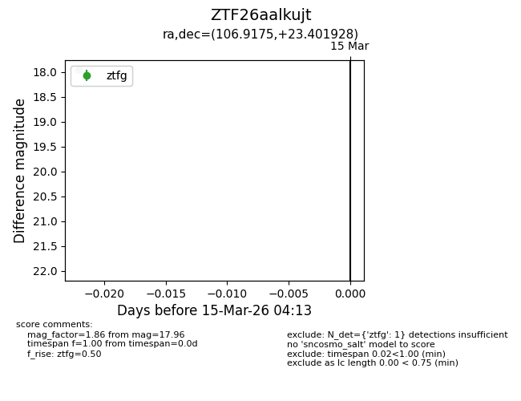
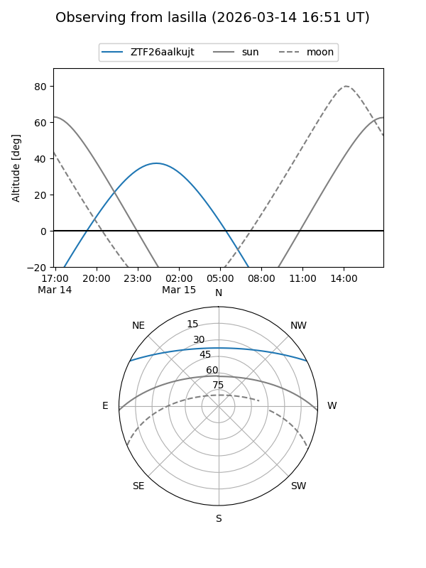
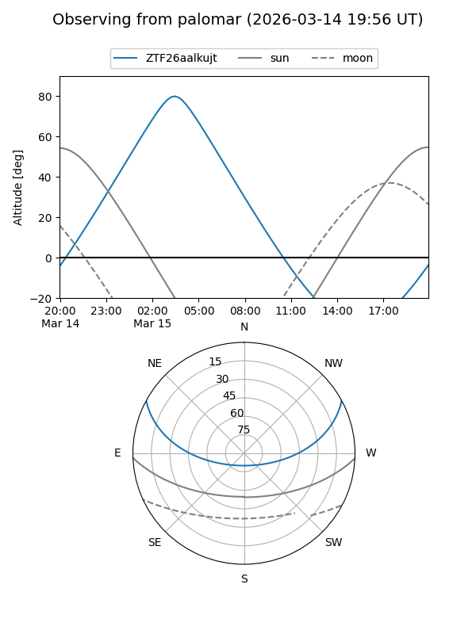

ZTF26aalkujt
Target ZTF26aalkujt at 2026-03-15 04:16
Aliases and brokers:
FINK: link
Lasair: link
ALeRCE: link
alt names
ZTF26aalkujt (ztf,fink_ztf)
Coordinates:
equatorial (ra, dec) = 106.9175,+23.40193
equatorial (HMS+DMS) = 07:07:40.21,+23:24:06.94
galactic (l, b) = (193.4489,+13.82211)
Flags:
Photometry:
last ztfg=17.96
1 ztfg detections
Lightcurve

Visibility


Additional plots